The original SyMAP was written for diverse plant genomes with short introns, but has been modified to work for the long introns of mammalian genomes, and less diverse genomes.
| 1. Build database | 2. Load Project Parameters | 3. A&S Pair Parameters 4. Synteny comparisons |
1. Build database
| Start SyMAP | Load Project | Available Synteny | Align& Synteny | CPU& Verbose | Additional information |
1.a Start SyMAP
| To start SyMAP, type at the command line: ./symap
The Project Manager will be displayed. To view the command line options: ./symap -h | For the first time user of SyMAP, see:
|

1.b Load Project
As shown in the Project Manager above, selected projects from the left panel will be listed in the Selected section on the right. The possible functions vary with the state, as listed below:| ♦ If there is any selected project not loaded to the database, you will see: | |
| Load All Projects | Load all projects that have not been loaded yet. |
| ♦ If a selected project is not loaded in the database, you will see: | |
| Remove from disk | Only: Remove alignment directories from disk
All: Remove alignment and project directory from disk Remove alignments removes alignments from data/seq_results for this project. You will be prompted for each one to confirm you want it removed. If there are no alignments, you will only see the prompt Remove project to remove the project directory from disk. Remove project directory remove data/seq/<project-name> from disk. You will be prompted to confirm you want it removed. If removed, the project will no longer be shown on the left. |
| Load project | Loads the sequence and optional annotations to the database.
When loading is complete, always verify by selecting the View link, which provides a summary of what has been loaded (e.g. View Arabidopsis). |
| Parameters | This brings up a panel of parameters, see Project Parameters. After the project is loaded, you can still change the Display parameters. |
| ♦ If a project is loaded into the database, you will see: | |
| Remove from database | The projects and its synteny pairs will be removed from the database, but the files stay on disk. |
| Reload project | Only: reload project only.
All: reload project and remove alignments from disk. If All is selected, it first prompts for each alignment directory for this project before it is removed. It removes the alignments, but it leaves the params.txt file. You will need to remove the alignment(s) if (1) there is a change in sequence, or (2) there is a change in the Minimal length parameter; see Load project parameters. For either option, it executes Remove from database followed by Load project. |
| Reload annotation | Removes the annotation from the database then load the annotations.
This does not effect the alignment, so they do not have to be redone. The Align&Synteny commands will recognize if there are existing alignments for the pair and use it for the clustering and synteny computations. |
| Parameters | This brings up the Project Parameters panel. |
| View | This bring up a panel of a summary of the loaded results, e.g. View Arabidopsis. |

For any action that will remove the project or alignments from disk, a popup will occur to confirm that you want this done! If it will be removing multiple alignment directories, it will prompt on each one.
1.c Available Syntenies
Sequence alignments are performed with MUMmer3, but can be changed to use MUMmer4 (see SyMAP MUMmer).This section shows a table with the status of alignments between the selected loaded projects. Each cell in the table represents a pair of projects and the cell contains a status code showing whether or not that pair has been aligned (codes are listed below). Note that the table shows each pair cell twice, but only the lower cells are activated.
Clicking on a cell selects that pair of projects (the cell will be highlighted in green), and the buttons that can be selected are activated.
| Code | Description |
| ✔ | Synteny for this project pair is ready to view. |
| A | The MUMmer alignment has been performed but the synteny computation has not been run. This status occurs if a pair is completed but then annotations are re-loaded for one of the projects, or if the MUMmer files have been added by the user. |
| ? | The alignment have not been completed. In this case, select Selected Redo and the alignments will be completed followed by the synteny computation. |
| The alignment has not been started. |
See Pair Parameters for additional information on the Available Syntenies and codes.
1.d Align&Synteny
| Align&Synteny (A&S): Synteny usually implies Cluster&Synteny as the process has 2 distinct algorithms. | |
|
Selected Pair
Selected Redo | Run (or complete) the A&S computation for the selected project pair.
If the pair is already complete, the button label changes to Redo, and only the Cluster&Synteny will be rerun (see Pair Parameters for some variations). If you wish to rerun the MUMmer alignment, first use the Clear Pair function. |
| Clear Pair | Only: remove synteny from database
All: remove synteny and alignments from disk for this pair If you have changed the Alignment parameters, or loaded new sequence for one of the projects, you need to have the alignments removed and redone; otherwise, you can just remove the synteny from database. |
| Parameters | Set the pair parameters for the selected pair cell . |
For the display buttons, see User Guide.
1.e CPU and Verbose
CPUs:- Enter the maximum number of CPUs to use for the alignments.
For example, if there are 8 alignments to be done, it will perform 4 at a time. - Alternatively, the number of CPUs may be entered in the symap.config file or
using the command line argument ./symap -p.
Verbose checkbox:
- If checked, detailed summary information is written as it processes the MUMmer files. The information is written both to the terminal and the logs/<proj-to-proj>/symap.log file.
- If this is not checked, it will write status information repeatedly on the same terminal line.
- See Demo examples.
- This can also be turned on using a command line argument ./symap -v.
1.f Additional information
| MUMmer | Resolving problems if MUMmer does not run |
| Draft | Ordering draft sequence |
| Self | Self-synteny |
| Cancel | Cancelling an A&S |
2. Load Project Parameters
| Parameter panel | Display | Load project | Load annotation | GFF Attributes | Save | Go to top |
2.a Parameter panel
Note: as of v5.8.6, the xToSymap conversion programs include CDS coordinates in the converted .gff files. |
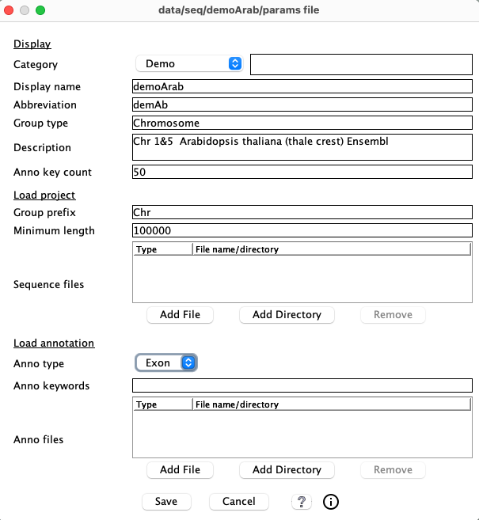 |


2.b Display
Most of the values in the parameter's Display section are shown in the Selected section of the Manager. New values take immediate effect on Save and are saved in the symap_5/data/seq/<project-name>/params.txt file.
| Parameter | Description | Default Value | Used In |
| Category |
Category label for the project. This is only used to group projects on the
left side of the Manager panel.
Category labels must be composed of only letters, numbers, dash, underscore, or period. Either select an existing label from the drop-down or enter a new one in the text box. Do NOT enter the same label with different capitalization -- it may mess-up. | Uncategorized | Selected |
| Display name | A user-friendly name for the project.
Shorter names will work better in the displays. Names must be composed of only letters, numbers, dash, underscore, period. It must be unique over all case-insensitive Display names and project-names. | project-name | Selected and all displays |
| Abbreviation | A name must be <= 5 characters.
Names must be composed of only letters, numbers, dash, underscore, period.
Uniqueness is not required over other Abbreviation. It can be the same as the corresponding Display name or project-name. However, it must be different between projects that are compared in Queries. | First 5 characters of Display name | Queries column headings and Pair Parameters |
| Description | Description of the project.
Do NOT use quotes, backslash or #. | New project | Selected and View |
| Group type | How to refer to the sequences. | Chromosome | Selected |
| Anno key count | This applies to the annotation attributes columns shown in the Queries results table. See the GFF Attributes section below. | 50 | -- |
2.c Load project
The following parameters are under the Load project section of the parameters panel.Group prefix
The term "Group" is used for any FASTA sequence type, e.g. chromosome, scaffold, contig.
This option sounds trivial but is important for a good display, so please read carefully the following.
| 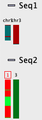 |

Minimum length
This must be an integer, commas are allowed (e.g. 1,000,000).
This is the minimum length of the FASTA sequence that will be loaded; smaller sequences will be ignored. Note that annotations
for ignored sequences will also be ignored, but some warning messages will be printed to the terminal.
See xToSymap Length for help with setting this parameter.
Sequence files
Select the input FASTA sequence file(s) or directories of sequence files.
For formatting, see Sequence files.
Default location: data/seq/<project-name>/sequence
If any either the Sequence files or Minimal length parameters are changed:
- If the project has already been loaded, Reload Project.
- If A&S has previously been run, select Clear Pair and remove the alignment files, then run A&S.
2.d Load annotation
The following parameters are under the Load annotation section of the parameters panel.Exon/CDS toggle (v5.8.7 or later)
- The associated type will be loaded (if it exists in the gff file).
- There will be places where the term "Exon" is used, even if "CDS" are loaded; this is partially because one project can load exons and another can load CDS, and this has no effect on the synteny.
- The loading of CDSs versus Exons are shown in the following places:
- The Manager Selected projects will state CDS or Exon. The View will state CDS or Exon.
- 2D:
The gene graphics will show the CDSs instead of exons.
The Align has an option to align spliced transcripts, which will use the CDSs instead of exons. - Queries:
MSA unique spliced transcripts option, will align the CDS sequences.
Export unique spliced transcripts option, where CDSs will be used instead of exons.
Anno keywords
A comma separated list of keywords. This can be used to reduce the annotation attribute keywords
shown in the 2D display and Queries table, as described in the GFF Attributes section below.
Anno files
Select the input GFF3-formatted annotation files corresponding to your sequences. Note, using
a GFF3 file directly can cause problems if it does not conform to what SyMAP expects; see
Annotation files.
Annotation is optional but highly recommended. Default location: data/seq/<project-name>/annotation
If any of these are changed:
- If the annotation has already been loaded, Reload Annotation.
- If A&S has been previously run, re-run A&S (the existing alignments files will be reused).
2.e GFF Attributes
If xToSymap was used to create the GFF file, then the attributes have already been filtered, and this section can probably be ignored.
This section discussed parameters Anno key count and Anno keywords.
It gives details on what GFF attributes are displayed in SyMAP, which refers to them as annotations.
The gene annotations are shown on the
2D display and as columns in the
Queries results table.
The attributes (annotations) comes from the last column of the GFF file. It is a keyword=value list, e.g.
ID=gene-AT1G01010;Name=NAC001;ID=rna-NM_099983.2;product=NAC domain containing protein 1Defaults: Generally, all genes in a file have the same keywords, in which case, use the defaults. This will cause the entire attribute to be shown for the gene in the 2D display, and the Queries table will have columns for each keyword that has over Anno key count (default 50) occurrences. In the example above, the columns will be ID, Name and product (the second ID will be ignored).
If there are many different keywords in the attribute list, this causes too many columns in the Queries table. This can be reduced by one (or both) of the following:
Anno key count: If there are many different keywords in the attribute list, set this count N to filter out all keywords with <N occurrences. The Anno key count can be modified at any time using symap (not viewSymap).
Anno keywords: The keyword=value pairs to be saved for each gene can be limited by listing the desired keywords separated by commas. Using this approach, it will also reduce annotation description per gene in the 2D display. Referring to the example above, if the string "ID, product" was entered for Anno keywords, the Name=value would not be part of any gene annotation. This must be set before Load Annotations is executed.
2.f Saving project parameters
On Save and before loading the project, the parameters are saved to:data/seq/<project-name>/params.txtSave also saves the parameters in the database.
The params.txt file parameters are shown on the Project Parameters panel. These can only be viewed and changed using symap (not viewSymap). Do not edit params.txt with a standard editor.
3. A&S Pair Parameters
| Parameter panel | Alignment | Cluster Hits | Synteny | Save | Synteny results | Go to top |
3.a Parameter panel
The Available Syntenies section explains the table in the lower right. The following provides more information in the context of the pair parameters.
The table on the right has cells that have the following completed:
| 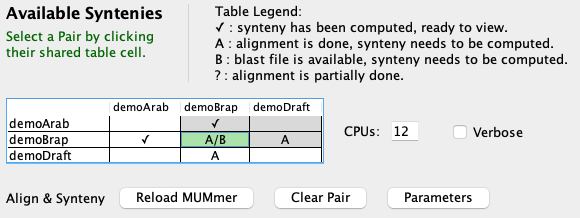 |

|
Alignment will not be redone if the cell contains an A. This is important because MUMmer is very time-consuming, but the synteny computation is not (see timing results); hence, one can make changes to the cluster or synteny parameters and re-run without redoing the alignments. Select a pair cell in the Available Syntenies table followed by the Parameters button, which will popup the panel shown on the right. If a ✔ or A in pair cell exists and the parameters for a section are changed, do the following:
If the Align&Synteny has already been run, the last row will have an extra
drop-down, as shown below (see drop-down):
|
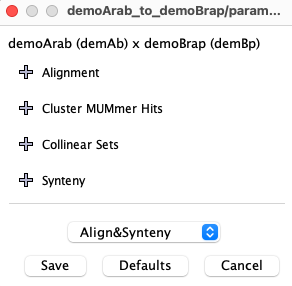 |


The parameters are described in the following 3 sections: Alignment, Cluster hits and Synteny.
3.b Alignment
Preparing the sequences
| Parameter | Description | Default |
| Concat |
Concat checked:
•For the 1st genome, sequences are concatenated into a file as long as the file length is <1G. Multiple
files of maximum file length 1G may be created.
•For the 2nd genome, the same as above except the maximum file length is 60M.
•All files from the 1st genome are searched against all files from the 2nd genome.
This results in fewer MUMmer alignments, which can be faster.
Concat unchecked: To reduce memory usage, you can uncheck Concat so that multiple files <60M are created for each genomes. This results in more MUMmer alignments, which can be slower. The exception is self-synteny, where all chromosomes are written to their own file, so Concat is not relevant. See below for timing differences. | On |
| Mask <abbrev> | Mask out all non-genic parts of the sequences before running MUMmer (gene annotation must
be provided).
The <abbrev>, which is set in the Project parameters popup Abbreviation parameter, is used to determine which sequence will be masked. Both sequences may be masked, which results in very fast execution and gene-based synteny. If Mask is changed after A&S, the alignment files need to be removed with Clear Pair and A&S run again. | Off |
Concat: The following statistics are from comparing Arabidopsis thaliana (119M) against Brassica rapa (297M) on a MacOS using 1 CPU.
| Concatenated | Not concatenated | |
48819 hits 334 synteny blocks 46319 gene hits 38334 synteny hits Finished in 1 hour 8 minutes |
48846 hits 334 synteny blocks 46348 gene hits 38345 synteny hits Finished in 1 hour 35 minutes |
MUMmer parameters
The default MUMmer parameter seems to work fine with SyMAP, so probably do not need changing.| Parameter | Description | Default |
| PROmer Args1 | Arguments for PROmer | - |
| NUCmer Args1 | Arguments for NUCmer | - |
| Self Args2 | Arguments to use when aligning a chromosome to itself | - |
| PROmer Only3 | Use PROmer for all alignments | Off |
| NUCmer Only3 | Use NUCmer for all alignments | Off |
1 BEWARE: Entered PROmer and NUCmer arguments are NOT checked for correctness. See MUMmer parameters.
2When self-alignment is performed, standard arguments are used when comparing different chromosomes. However, additional arguments may be desired when a chromosome sequence is run against itself, e.g. --nosimplify.
3 By default, PROmer is used for alignments between different projects, while NUCmer is used for self alignments.
All MUMmer files but the those with the .mum suffix are removed by symap. If you prefer them not to be removed, use the "-mum" command line parameter, i.e.
./symap -mum
3.c Cluster Hits
| Algo1 vs Algo2 with hints | Parameter description | Pseudo and Piles | Collinear Sets | Go to top |
3.c.I Algo1 vs Algo2
| Algorithm 1 (modified original, abbreviated Algo1): | |
| Pros | This is an generic algorithm that has knowledge of genes versus intergenic hits.
It is recommended for ordering sequence contigs and when there are little or no gene annotation. It must be used for self-synteny. It has been used on 100's of genome comparisons. |
| Cons | It does not distinguish between exon and intron hits. It is more likely to miss good homologous gene pairs. |
| Parameters | It only has one parameter, which is easier to run but there is no control over what hits are filtered. |
| Algorithm 2 (exon-intron, abbreviated Algo2): | |
| Pros | This is a new algorithm with explicit knowledge of gene pairs and their exon-intron structure.
When there is good gene annotations for both genomes, this is definitely the superior algorithm. It takes less memory. |
| Cons | It does not perform self-synteny.
It does not work when a given chromosome is split over multiple MUMmer files; this will NOT happen when SyMAP generates the MUMmer files. |
| Parameters | It has two set of parameters, hence, more control over results than Algo1. See Hints below the parameter explanation; the parameters generally do not need adjusting. |
Algo1 is the default for self-synteny and if there is no annotation; else Algo2 is the default.
Wrong strand The wrong strand is when all hits in a cluster are to the same strand (++/--) yet the cluster aligns to two genes on the different strands (+-/-+), or vice versa.
Algo1 includes these hits. You can view them in the Queries where the Hit St column will be different than the two gene Gst columns.
Algo2 does NOT include these hits. You can request to view the potential hits during the A&S by running it with the "-wsp" flag, i.e. ./symap -wsp . This will only show gene pairs with (1) multiple hits to exons (in one or multiple gene pairs), (2) at least one is not an overlapping gene. It is up to the user to determine what is real.
Hints about parameter settings
Hint for Algo1: Increasing the Top N parameter can cause too many hits and reduce synteny. Decreasing it can remove more gene-pair hits. Hence, try Algo2 if you want more gene pairs.
Hint for Algo2: On the output to the terminal (in Verbose mode), if any chromosome pair shows over 10,000 hits, the parameters probably need to be made more stringent. Too many hits confuses the synteny algorithm, which results in synteny blocks not being found; it also results in very long execution time.
Suggestion: For large genomes, experiment with the parameters on just one pair of the chromosomes. (You can use xToSymap for the split.)
I have experimented with the datasets: (1) human, chimpanzee, mouse (2) Arabidopsis, Brassica rapa, Brassica oleracea. Only B. rapa to B. oleracea needed parameter adjustment: the number of G1 hits was over 200k, which is way more than typical; by increasing all parameters a small amount, this reduced to just over 100k.
3.c.II Parameter description
|
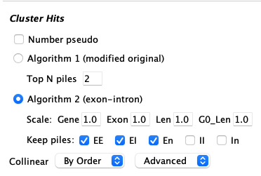 | Defaults:
|

| Parameter | Description | ||||||||||||
| Number Pseudo | If selected, the un-annotated ends of hits will be assigned a pseudo number. This is explained below in Pseudo genes. | ||||||||||||
| Algo1 (original) | |||||||||||||
| Top N piles | It will retain the top N hits of a pile of overlapping hits (Pile of Hits), as well as all hits with score at least 80% of the Nth hit. | ||||||||||||
| Algo2 (gene-centric) | |||||||||||||
| Scale |
| ||||||||||||
| Keep piles | EE, EI, En, II, In (E=exon, I=intron, n=non-gene)
| ||||||||||||
| Top N piles | Algo2 uses Algo1 Top N parameter for any uncheck categories, but in a more conservative way. It will retain the Top N hits of a piled region that have lengths within 80% of the longest hit. | ||||||||||||
| Collinear Sets | See Collinear sets | ||||||||||||
3.c.III Pseudos and Piles
Pseudo genes|
The end of a hit may not overlap an annotated gene; by default, this
will just show a Gene# of 'N.~' where N is the chromosome number.
If Number Pseudo is selected, a pseudo Gene# will be assigned. The counts start after the annotated gene numbers and are suffixed by "~". For example, if the last Gene# for Chr03 is 5550 (e.g. 3.5550.), the first pseudo gene number will be 6000 (e.g. 3.6000.~). | 
|
If A&S was run without numbered pseudos, go to the Pair Parameter panel, and select Number Pseudo in the lower-left drop-down; only this algorithm will be run. This cannot be undone; you would need to re-run A&S with the Number Pseudo unchecked to remove them.
| Pros |
If you would like the Queries
Cluster and
Report
to include un-annotated hits.
If you are exploring new candidate genes, numbered pseudos are easier to track. If your genome is not annotated, numbered pseudos are easier to track. |
| Cons | The Queries results can be easier to view with the 'N.~' as it is more distinct from a real Gene#. |
If comparing more than 2 species, it makes the most sense to have them all numbered or not numbered (though a mix will work).
Piles of Hits
| The below image shows a pile of hits on the left (Cabb C5)
that link to repetitive genes on the right (Arab Chr02). These are important to keep.
The right image shows a pile of hits in an intergenic region (Cabbage Chr03) to multiple other regions (B.rapa Chr01).
There are MANY occurrence of repeats like this in the MUMmer file, which is why these piles
must be filtered; if they are not, the synteny algorithm does not perform well.
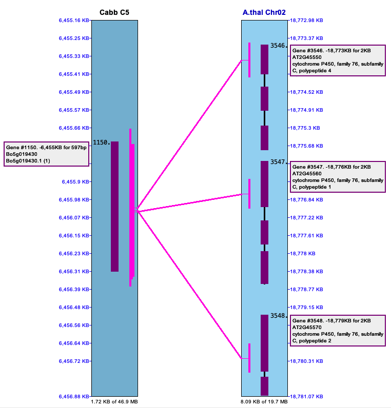 | 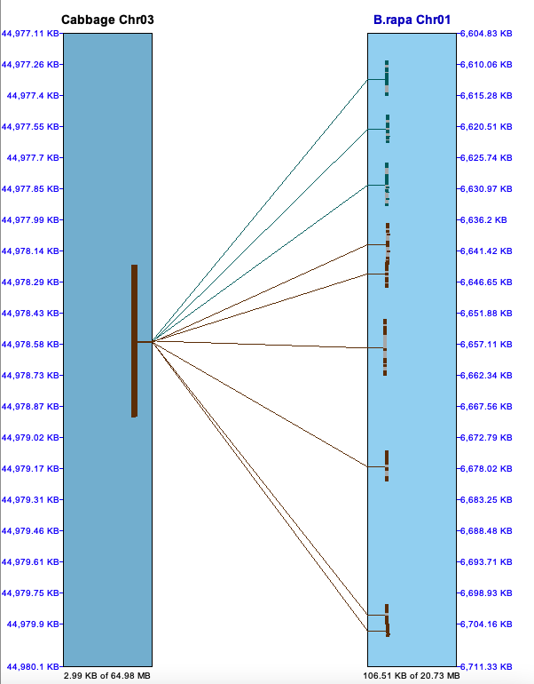 |


3.c.III Collinear Sets
Collinear Sets is abbreviated as "CoSet" below. A description of Collinear Sets is given in Details.Parameters
| By Order or By Size | The 1st option numbers the CoSets in descending order by the start coordinates.
The 2nd option sorts CoSets by size and then numbers then in ascending order by size. |
| Advanced or Simple | The 1st option uses the advanced algorithm (released v5.8.8), which tries to find collinearity
in complex overlapped genes areas.
The 2nd option uses the original algorithm, which does not try to resolve overlapping genes. |
Suggestion:
- Use Advanced; if you do not like how it handles embedded genes, change to Simple.
- You can change the collinear parameters, then only execute the Collinear Set algorithm; see Save.
- The algorithm runs very quickly, e.g. 10 seconds for mouse compared to humans.
- If the Collinear sets have changed, and you are using the Synteny Strict option, you should rerun it with Synteny Only because it uses the collinear sets (see Strict below).
3.d Synteny
|
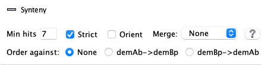 | The image on the left shows the defaults. The one exception is that Strict is turned off for draft sequence. |

| Parameter | Description |
| Min Hits | Minimum number of anchors required to define a synteny block. |
| Strict | This uses the Original algorithm with the following changes:
|
| Orient | All hits in a block must have hits of the same orientation ('+/+' or '-/-') or different orientation ('+/-' or '-/+'). |
| Merge | Overlap: The blocks must overlap to be merged.
Close: Blocks that overlap or are close will be merged. |
If the Align&Synteny has already been executed, and you want to try different synteny parameter, you may just run the synteny algorithm as described in Save.
See Synteny results for comparison of using the different synteny parameters. The following is a brief comparison of three images of the same regions when evaluated with the following 3 parameter sets:
Default (one block)
Same orient (three blocks)
Same orient with Merge (two blocks).
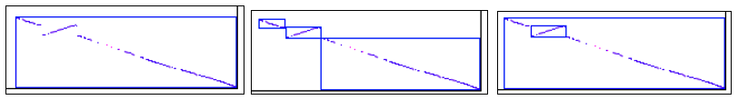
In the last image, the reverse orientation block is embedded in another block

Order against
For draft sequences, they may be ordered against another project. See Ordering details.| The Draf->Seq2 and Seq2->Draf use the
Abbreviation set in the Project parameters panel.
The "->" indicates that the first sequence will be ordered against the second.
If the draft has been aligned to the Order against sequence, but this option was not set, it can be set and the Synteny Only setting used (described below in 3.e Save). | 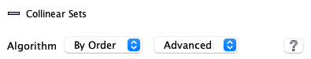 |

Hints about synteny parameter settings
It is easier to experiment with synteny parameters since Synteny Only can be used to speed it up. For two genome complete sequence synteny, it is strongly suggested you start with Strict.
→ Suggestion: For large genomes, experiment with the parameters on just one or two pairs of the chromosomes; you can use xToSymap for the split. Note: the synteny results of one or two chromosomes will be slightly different compared to whole genome synteny.
3.e Save
Lower-left drop-down
| If the Align&Synteny has already been run, the lower left side of the parameters window will have a drop-down with the following options: |
| Clust&Synteny | If you have changed the clustering parameters, select this option. |
| Synteny Only | If you have only changed synteny parameters, select this option. |
| Number Pseudo | If you want to add pseudo numbers, select this option. |
| Collinear Sets | If you only want to redo the Collinear Sets computation, select this option. |
Manager: The Selected Pair button
will have its label replace to reflect the drop-down setting, as follows:
Clust&Synteny → Selected Redo
Synteny Only → Synteny Only
Number Pseudo → Pseudo Only
Collinear Sets → Collinear
If you have changed the alignment parameters, you must remove them using the Clear Pair option on the Manager panel.
Saving pairs parameters
Before the A&S is executed, the parameters are saved indata/seq_results/<proj1-to-proj2>/params.txtOnce the A&S is executed, the parameters are stored in the database.
The file parameters are shown on the pair Parameter panel. These can only be viewed and changed using symap (not viewSymap).
Any parameter not the default will be shown on the Summary page.
BEWARE: If you run A&S, then change the PROmer or NUCmer settings, but forget to Clear Pair before running A&S again, the parameters on the Summary page will be wrong (SyMAP does not check for this situation).
4. Synteny parameter comparisons
The following is from comparing Arabidopsis thaliana chromosomes 1 and 2 with Brassica rapa chromosomes 1 and 7. The Clustering hits Algo2 (exon-intron) was used in all cases.
| Original vs Strict: Both allow a mix of inverted and non-inverted hits in a block, but Strict only allows small inversions within a non-inverted block and vice-versa (unless Merge is used). The Strict blocks tend to not have the tails of dots that have bigger gaps. | |
| Original 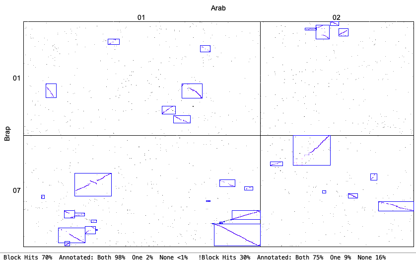 | Strict 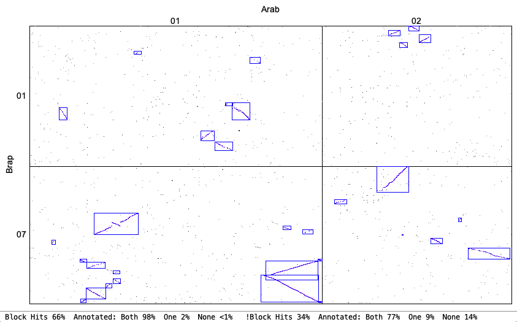 |
| Original chr1&chr7 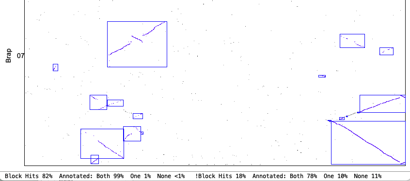 | Strict chr1&chr7
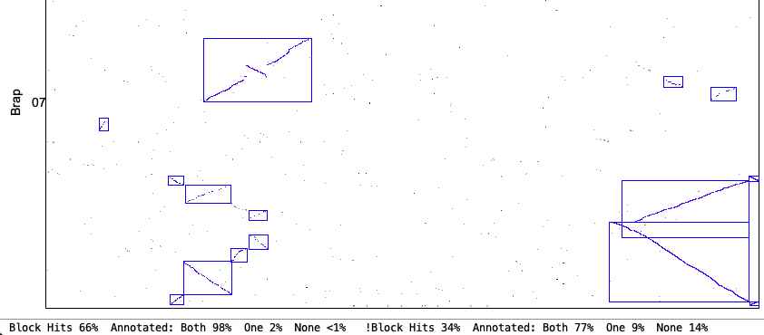 |
| Orient: This requires all hits in a block to be in the same orientation. This options fits with what some other software packages consider 'synteny'. | |
| Original Orient chr1&chr7 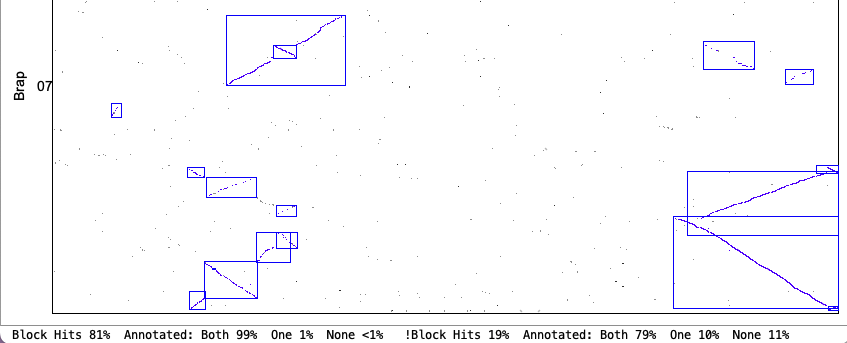 | Strict Orient chr1&chr7
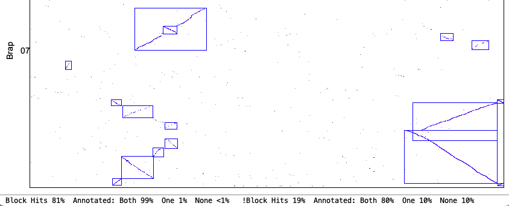 |
| Merge Overlap: Only overlapping blocks can be merged. This will have little effect if Orient has been used since mixed blocks cannot be merged. | |
| Original Merge Overlap chr1&chr7 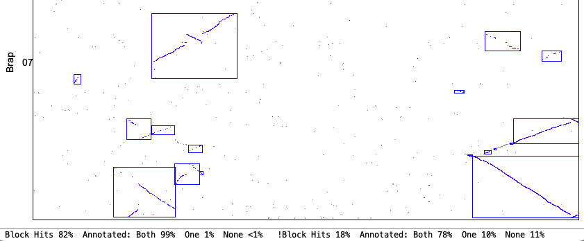 | Strict Merge Overlap chr1&chr7
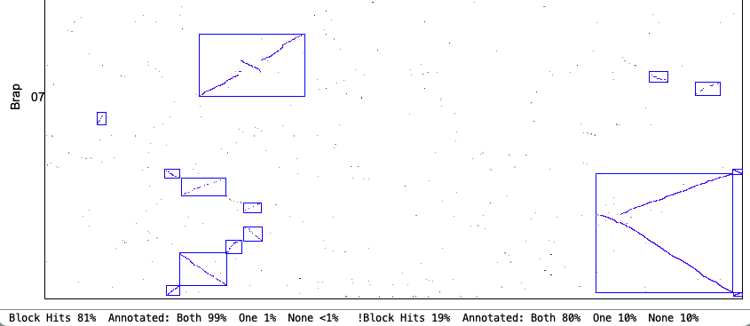 |
| Merge Close: Blocks that are close can be merged. | |
| Original Merge Close chr1&chr7 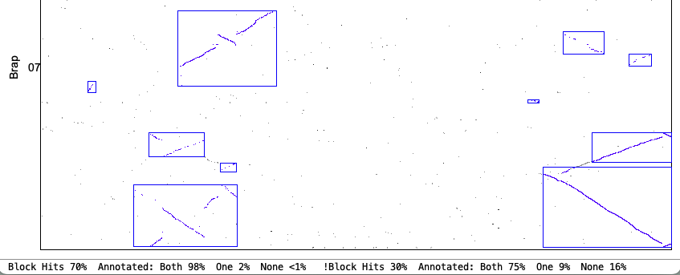 | Strict Merge Close chr1&chr7
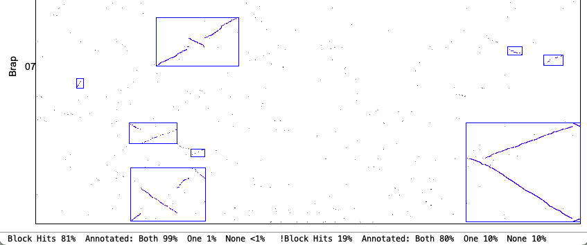 |


| Go to top |
Email: cas1@arizona.edu